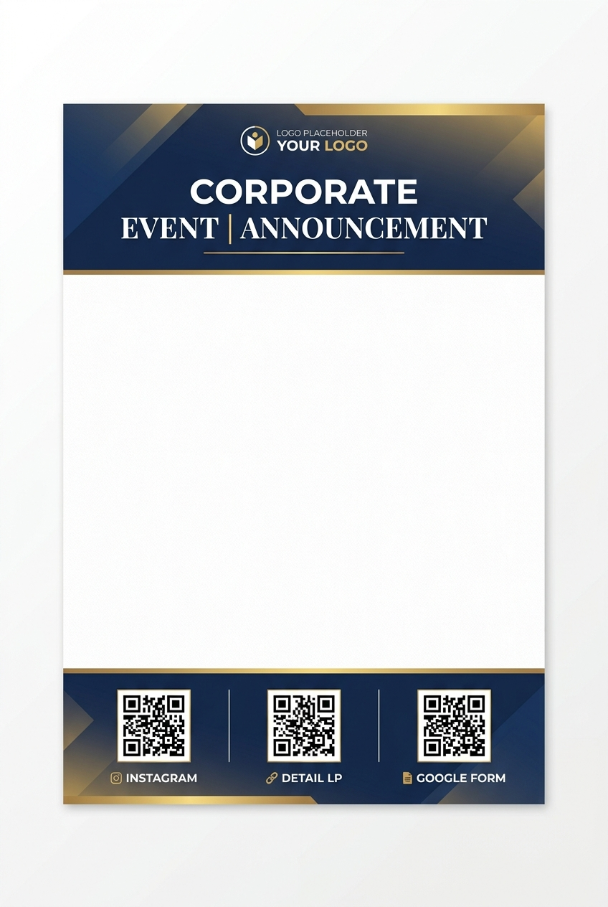

共通チラシフォーマット見本
広報委員会が統一して提供するA4縦型チラシのフォーマット見本です。
上部には春日井JCの統一ロゴとタイトルエリア、下部にはお問合せ情報と3つのQRコード（Instagram、詳細LP、Googleフォーム）を配置しています。
中央の白いエリアには、各事業のテーマに沿ったインパクトのあるビジュアルやキャッチコピーのみを大きく配置できます。細かな説明や申し込み要項はすべてLPへ逃がす設計です。
Instagram: 日常の活動や直近の様子を伝え、ファン化を狙います。
詳細LP: チラシに載り切らない詳細スケジュールや登壇者プロフィールなどを掲載。
Google Form: スムーズな申し込みを促す直行ルートです。
チラシから詳細LPへのシームレスな体験を確認しましょう！

連動LP（ランディングページ）の役割
チラシのQRコードから遷移する詳細・申込用LPのプロトタイプです。
スマートフォンでの読みやすさ、申し込みのしやすさに特化したレスポンシブデザインになっています。
モバイルファースト設計
イベント参加者の8割以上がスマートフォンからアクセスします。画面の幅に最適化された高速表示仕様で、離脱を防ぎます。
申し込み完了率の向上
チラシに細かな要項（地図、注意事項など）を盛り込みすぎると申込への心理的ハードルが上がります。LP側で段階的に情報を整理して見せることで、スムーズな申込ボタン押下へと導きます。
広報効果の「可視化」
QRコード経由でのアクセス数や申し込み人数を計測することで、今回の広報計画がどれだけの集客効果を生んだかを数値として上層部に報告可能です。